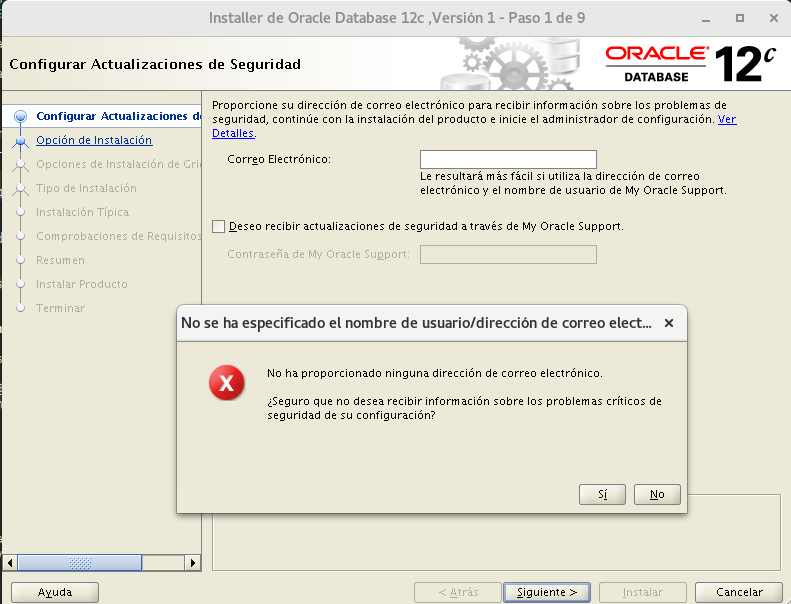
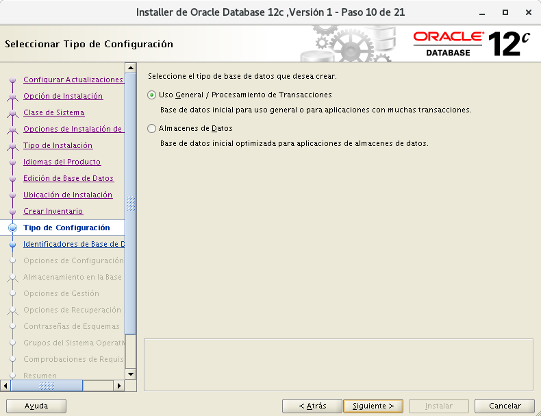
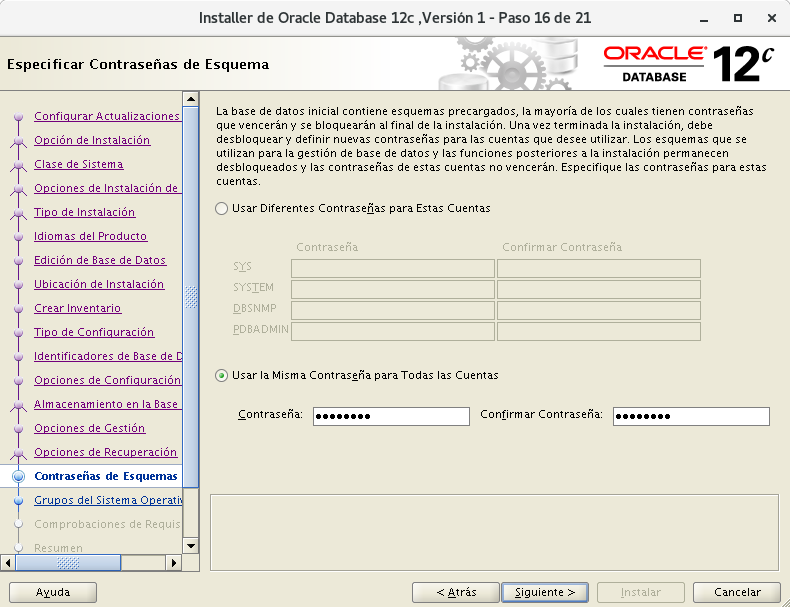
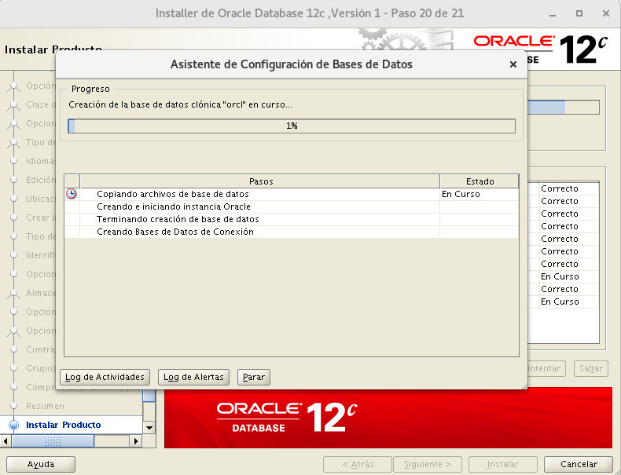

Instalación Oracle Database 12c versión 2(12.1.0) Enterprise Edition en Debian Jessie 8.11¶
Y aquí llega lo que no suele ser visto con Oracle, la instalación de su software privativo de base de datos en un sistema que no está soportado, en un sistema Debian. Así es, aquí descubrimeros que entresijos tiene realizar una instalación básica en varios pasos.
Configuración inicial de la máquina¶
- El espacio temporal: debe ser mayor que 500 MB. (Espacio en /tmp)
- El espacio de intercambio: debe ser mayor que 150 MB. (SWAP)
- El monitor: debe estar configurado para mostrar al menos 256 colores. (Tener instalado "xorg")
-
Instalación de debian en VirtualBox con:
- 30GB de disco duro
- 2GB de RAM
- 2 procesadores virtuales
- ISO imagen debian-8.11.0-amd64-netinst.iso Debian
- Conexión a Internet
-
Instalación de paquetes con debian-installer:
- Utilidades estándar del sistema
- SSH server
-
Reposistorios recomendados para debian:
1 2 3 4 5 6 7 8 9 10 11 12 13 14 15 16 | su - echo """ ############################ Debian Main Repos ############################ deb http://deb.debian.org/debian/ oldstable main contrib non-free deb-src http://deb.debian.org/debian/ oldstable main contrib non-free deb http://deb.debian.org/debian/ oldstable-updates main contrib non-free deb-src http://deb.debian.org/debian/ oldstable-updates main contrib non-free deb http://deb.debian.org/debian-security oldstable/updates main deb-src http://deb.debian.org/debian-security oldstable/updates main deb http://ftp.debian.org/debian jessie-backports main deb-src http://ftp.debian.org/debian jessie-backports main ########################################################################## """ > /etc/apt/sources.list |
Actualizamos la lista de paquetes y el sistema:
1 | apt update && apt -y upgrade
|
Configuración inicial personalizada para Oracle¶
- Se suele sugerir la siguiente estructura de grupos y usuarios:
1 2 3 4 5 | addgroup --system oinstall addgroup --system dba adduser --system --ingroup oinstall -shell /bin/bash oracle adduser oracle dba passwd oracle |
- Creación de directorios requeridos por Oracle:
1 2 3 | mkdir -p /opt/oracle/product/12.1.0.2 mkdir -p /opt/oraInventory chown -R oracle:dba /opt/ora* |
- Para instalar oracle se necesitan crear los siguientes enlaces:
1 2 3 4 | ln -s /usr/bin/awk /bin/awk ln -s /usr/bin/basename /bin/basename ln -s /usr/bin/rpm /bin/rpm ln -s /usr/lib/x86_64-linux-gnu /usr/lib64 |
- Límites en el sistema (por seguridad):
1 2 3 4 5 6 7 8 9 10 11 12 13 14 15 16 17 18 19 | echo """ ## Valor del número máximo de manejadores de archivos. ## fs.file-max = 65536 fs.aio-max-nr = 1048576 ## Valor de los parámetros de semáforo en el orden listado. ## ## semmsl, semmns, semopm, semmni ## kernel.sem = 250 32000 100 128 ## Valor de los tamaños de segmento de memoria compartida. ## ## (Oracle recomienda total de RAM -1 byte) 2GB ## kernel.shmmax = 2147483648 kernel.shmall = 2097152 kernel.shmmni = 4096 ## Valor del rango de números de puerto. ## net.ipv4.ip_local_port_range = 1024 65000 ## Valor del número gid del grupo dba. ## vm.hugetlb_shm_group = 114 ## Valor del número de páginas de memoria. ## vm.nr_hugepages = 64 """ > /etc/sysctl.d/local-oracle.conf |
Atención
Importante que vm.hugetlb_shm_group sea el GID del grupo dba.
bash
cat /etc/group | grep dba
Cargamos la configuración al sistema:
1 | sysctl -p /etc/sysctl.d/local-oracle.conf |
También creamos esta configuración por seguridad:
1 2 3 4 5 6 7 8 9 10 11 | echo """ ## Número máximo de procesos disponibles para un solo usuario. ## oracle soft nproc 2047 oracle hard nproc 16384 ## Número máximo de descriptores de archivo abiertos para un solo usuario. ## oracle soft nofile 1024 oracle hard nofile 65536 ## Cantidad de RAM para el uso de páginas de memoria. ## oracle soft memlock 204800 oracle hard memlock 204800 """ > /etc/security/limits.d/local-oracle.conf |
- Variables de entorno para Oracle:
1 2 3 4 5 6 7 8 9 10 11 12 13 14 15 16 17 18 | echo """ ## Nombre del equipo ## export ORACLE_HOSTNAME=localhost ## Usuario con permiso en archivos Oracle. ## export ORACLE_OWNER=oracle ## Directorio que almacenará los distintos servicios de Oracle. ## export ORACLE_BASE=/opt/oracle ## Directorio que almacenará la base de datos Oracle. ## export ORACLE_HOME=/opt/oracle/product/12.1.0.2/dbhome_1 ## Nombre único de la base de datos. ## export ORACLE_UNQNAME=orcl ## Identificador de servicio de escucha. ## export ORACLE_SID=orcl ## Ruta a archivos binarios. ## export PATH=$PATH:/opt/oracle/product/12.1.0.2/dbhome_1/bin ## Ruta a la biblioteca. ## export LD_LIBRARY_PATH=$LD_LIBRARY_PATH:/usr/lib/x86_64-linux-gnu:/bin/lib:/lib/x86_64-linux-gnu/:/usr/lib64 """ >> /etc/bash.bashrc |
- Cargamos las variables de entorno:
1 | source /etc/bash.bashrc
|
Atención
Importante establecer correctamente las variables de entorno.
- Instalación de paquetes necesarios:
1 | apt install build-essential binutils libcap-dev gcc g++ libc6-dev ksh libaio-dev make libxi-dev libxtst-dev libxau-dev libxcb1-dev sysstat rpm xauth xorg unzip |
Descargas de Oracle Database Software¶
Esta acción la realizaremos en el equipo anfitrión con entorno gráfico.
Link para descarga: Oracle
Primero iniciamos sesión y aceptamos el "License Agreement". Luego elegimos el siguiente:
Oracle Database 12c Release 1
(12.1.0.2.0) Enterprise Edition
linux x86-64 File 1 (3.2 GB)
- Descomprimimos el zip: Abrimos consola y nos situamos en el directorio de la descarga:
1 2 | cd Descargas
unzip linuxx64_12102_database.zip
|
- Pasamos lo descomprimido a la máquina virtual:
Aparecerá una carpetadatabase, esa carpeta la copiaremos mediantescpa la máquina virtual:
1 | scp -r database/ oracle@192.168.1.25: |
Instalación de Oracle¶
- Ejecutaremos mediante
sshyX11forwardel instalador de Oracle con entorno gráfico:
1 2 | ssh -XC oracle@192.168.1.25 database/runInstaller -IgnoreSysPreReqs |
La opción -IgnoreSysPreReqs es para que ignorar los prerequisitos del sistema.
La opción -X ejecuta aplicaciones gráficas.
La opción -C es para comprimir los datos de la conexión.
- Configurar Actualizaciones de Seguridad
Demarcamos la casilla para recibir actualizaciones y continuamos con Siguiente >.

Nos aparecerá una ventana para decirnos que Oracle no está soportado para este sistema
y que el instalador no realizará las comprobaciones de requisitos en el sistema,
la ignoramos y continuamos diciendo Sí.

- Seleccionar Opción de Instalación
Elegimos la opción para "Crear y configurar base de datos" ya que vamos a crear una nueva base de datos y continuamos con Siguiente >.

- Clase de Sistema
Elegimos la opción "Clase de Servidor" y continuamos con Siguiente >.

- Opciones de Instalción de Grid
Elegimos "Instalación de Base de Datos de Instancia Única" y continuamos con Siguiente >.

- Tipo de Instalación
Elegimos Avanzada para configurar mas a fondo.

- Idiomas
Dejamos por defecto.

- Edición de Base de Datos
Solo nos deja Enterprise Edition.

- Ubicación de Instalación
Si tenemos bien definidas las variavles de entorno se configura automáticamente.

- Crear Inventario
Si tenemos bien definidas las variavles de entorno se configura automáticamente.

- Tipo de COnfiguración
Para Uso General.

- Especificar Identificadores de Base de Datos
Dejamos valores por defecto.

- Opciones de Configuración
En "Juego de Caracteres" elegimos "Unicode".

Y en "Esquemas de Ejemplo" marcamos la casilla para crear la base de datos con esquemas de ejemplo.

- Almacenamiento en la base de datos
Dejamos por defecto.

- Opciones de Gestión
Saltamos este paso y continuamos con Siguiente >.

- Opciones de Recuperación
Saltamos este paso y continuamos con Siguiente >.

- Contraseñas de Esquemas
Para mayor comodidad usamos la misma contraseña para todas las cuentas. Además Oracle recomienda una contraseña de al menos 8 caracteres, al menos una en mayúscula, otra en minúscula y al menos un carácter alfanumérico.

- Grupos del Sistema Operativo con privilegios
Dejamos por defecto.

- Resumen de Instalación
Aquí vemos la configuración final de la instalación para poder comprobar si tenemos algún error. Seleccionamos "Instalar".

- Instalar Producto
Este paso tardará algunos minutos.

- Ejecutar Scripts de Configuración
Finalizando la instalación Oracle nos pide que ejecutemos unos scripts como ROOT:
1 2 | /opt/oraInventory/orainstRoot.sh /opt/oracle/product/12.2.0/dbhome_1/root.sh |

- Asistente de Configuración de base de Datos
Al finalizar la ejecución de los scripts pulsamos Aceptar y comenzará el proceso de creación de la base de datos que tardará aún mas tiempo que la instalación del software. Así que a esperar...

- Fin Configuración
Pasados bastantes minutos Oracle nos muestra alguna información de la base de datos como la URL de "Enterprise Manager Database Express" en:
1 | https://localhost:5500/em |
Para acceder a dicha aplicación web necesitaremos tener instalado Adobe Flash Player y aceptar la excepción de seguridad de esa página.
Los accesos desde otras redes están abiertas por defecto.
https://192.168.1.25:5500/em
Aceptamos.


- Fin de la instalación

Accediendo a la base de datos¶
El acceso a la base de datos lo realizaremos mediante línea de comandos con "sqlplus".
Podemos instalar un paquete que nos ayudará con un uso mas amigable de "sqlplus":
1 | apt install rlwrap |
Accedemos a la base de datos:
1 | rlwrap sqlplus sys/PASS as sysdba |
Ejecutamos consulta para ver la versión de Oracle:
1 | select * from v$version; |

Para poder crear usuarios ejecutamos lo siguiente:
alter session set "_ORACLE_SCRIPT"=true;
-\ \ \ \ \ \ -Ó
echo 'alter session set "_ORACLE_SCRIPT"=true;' >> $ORACLE_HOME/sqlplus/admin/glogin.sql
Iniciación de la base de datos¶
Por defecto si reinicio la máquina no arranca oracle asi que de momento la arrancaremos manualmente:
- Estado del Listener
1 | lsnrctl status |

- Arrancamos el Listener:
1 | lsnrctl start |

- Arrancamos la base de datos:
1 | sqlplus / as sysdba |
1 | startup
|

Configuración acceso remoto Oracle¶
Si necesitamos acceder mediante la red seguiremos los siguientes pasos:
- Editamos la configuración del "Listener" de oracle en
$ORACLE_HOME/network/admin/listener.ora:
1 | nano $ORACLE_HOME/network/admin/listener.ora
|
- Dejamos el fichero tal que así para que puedan acceder desde cualquier red:
1 2 3 4 5 6 7 8 9 10 11 12 13 14 15 16 17 18 19 20 | SID_LIST_LISTENER = (SID_LIST = (SID_DESC = (GLOBAL_DBNAME = orcl) (ORACLE_HOME = /opt/oracle/product/12.1.0.2/dbhome_1) (SID_NAME = orcl) ) ) LISTENER= (DESCRIPTION_LIST = (DESCRIPTION = (ADDRESS_LIST = (ADDRESS = (PROTOCOL = IPC)(KEY = EXTPROC1521)) ) (ADDRESS_LIST = (ADDRESS = (PROTOCOL = TCP)(HOST = 0.0.0.0)(PORT = 1521)) ) ) ) |
- Reiniciamos el "Listener" con:
1 2 | lsnrctl stop lsnrctl start |
Instalación de Cliente SQLPlus remoto¶
Lo primero será instalar alien el cual nos permite reempaquetar un fichero .rpm en .deb:
1 | apt install alien |
Luego nos descargamos los ficheros RPM necesarios de la página de Oracle
Aceptamos los términos y elegimos los siguientes paquetes:
-- Version 12.1.0.2.0 --
oracle-instantclient12.1-basic-12.1.0.2.0-1.x86_64.rpm
oracle-instantclient12.1-sqlplus-12.1.0.2.0-1.x86_64.rpm
oracle-instantclient12.1-devel-12.1.0.2.0-1.x86_64.rpm
Reempaquetamos:
1 | alien --to-deb --scripts oracle-instantclient12.1-*.rpm |
Instalamos los paquetes generados:
1 | dpkg -i oracle-instantclient12.1-*.rpm |
Añadimos la variabe de entorno necesaria:
1 2 3 | echo ''' export LD_LIBRARY_PATH=/usr/lib/oracle/12.1/client64/lib/:$LD_LIBRARY_PATH ''' >> /etc/bash.bashrc |
Ya podemos usar SQLPlus remotamente:
1 | sqlplus64 system/PASS@//192.168.1.25:1521/orcl |

Y con esto y un bizcocho se acabó Oracle!!
De momento...
Enlaces de Interés¶
Oracle Oficial
Wiki Debian
debian-administration
oracle-base
dbaora
gemsofprogramming
Oracle Oficial 10g
Blog juanjo
Blog Aitor